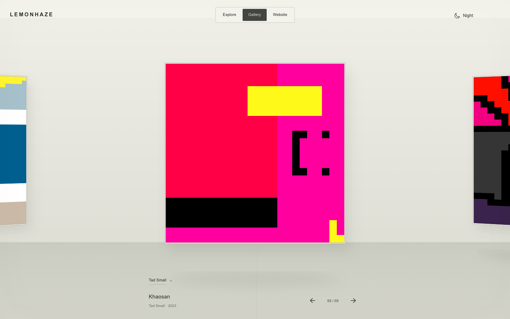
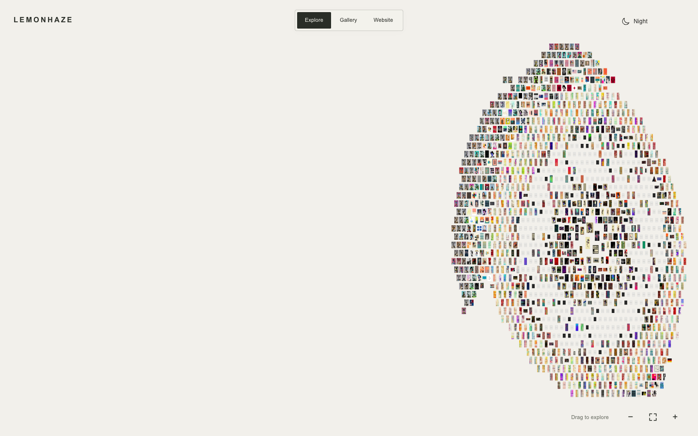
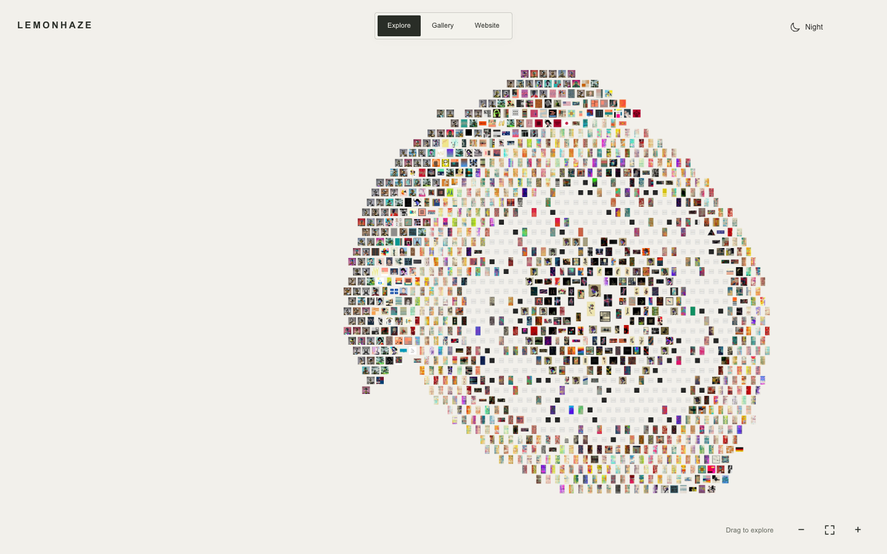
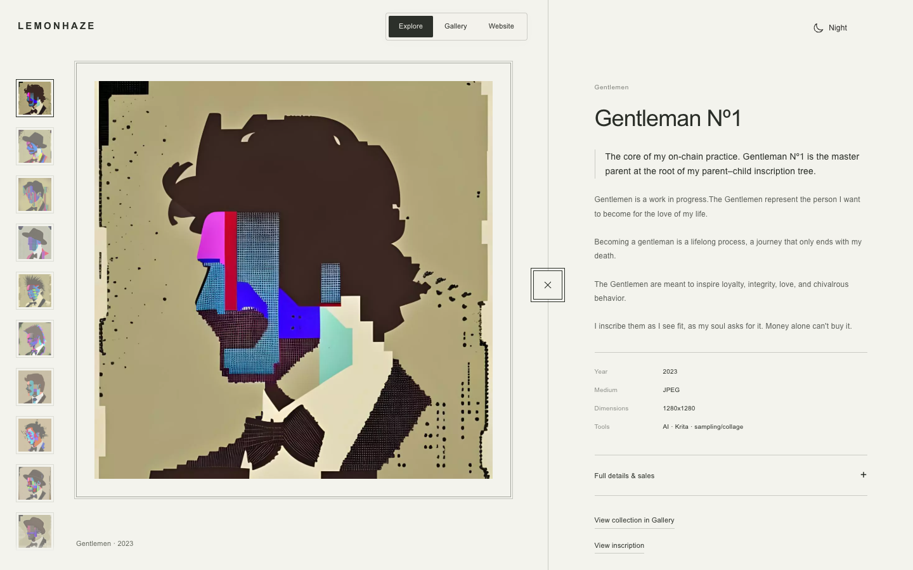
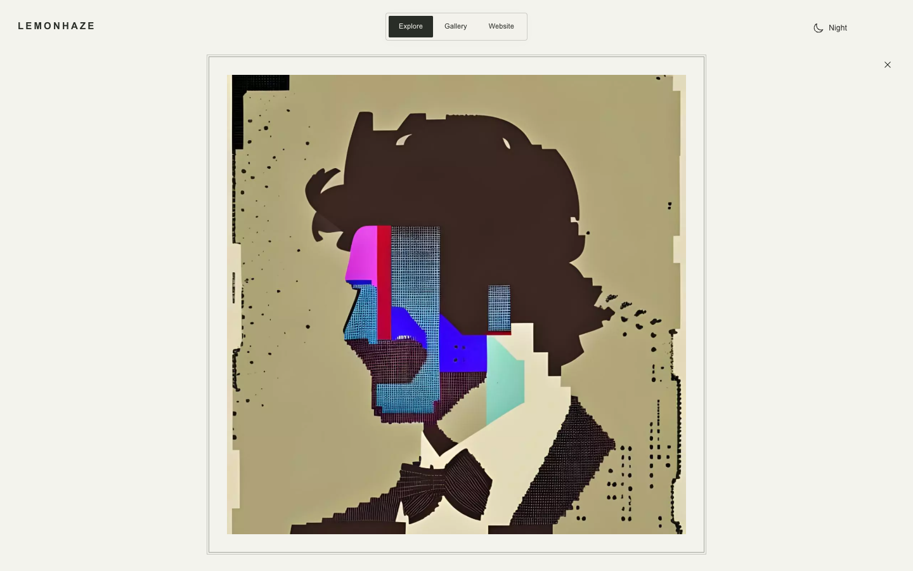
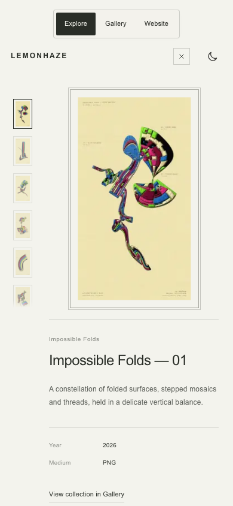
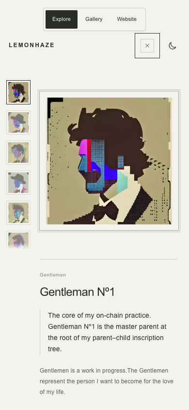

Pass 18 review
Native pixel originals, isolated mobile zoom, the master-parent note, and smoother desktop wall response.

Tad Small — sharp native pixels in Gallery.
Desktop — sustained pressure against the right wall.
Desktop — after the rebound settles.
Gentleman Nº1 — master-parent note in the desktop split view.
Desktop solo view — click the artwork to expand; close or Escape returns to the split.
Mobile — artwork detail after pinching the Explore field.
Mobile — Gentleman Nº1 and the master-parent note.